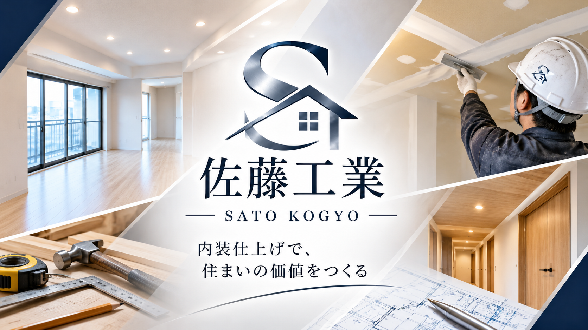
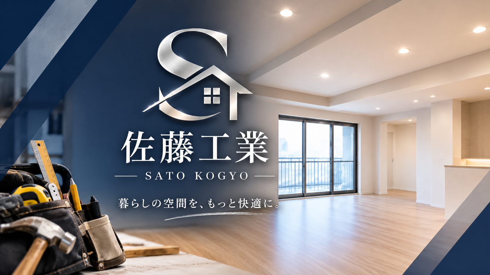

OUR BUSINESS
新築マンション・アパートの
内装工事・リフォーム。
一つひとつの現場に向き合い、丁寧に仕事を進めることを大切にしています。
千葉県内を中心に対応しています。工事内容・エリアの詳細は個別にご相談ください。


CARPENTER PARTNERS
一緒に現場を支える、
仲間を募集しています。
一度きりの応援ではなく、継続的に協力し合える一人親方の大工さんを募集しています。ある程度の大工経験がある方を歓迎しています。
協力大工募集ページへ →
ABOUT
佐藤工業について
親から受け継いだ仕事を大切に、2000年から現場に携わる代表が、一つひとつの現場と誠実に向き合っています。
屋号佐藤工業
代表佐藤 伸由
仕事内容新築マンション・アパートの内装工事・リフォーム
対応エリア千葉県中心（詳細応相談）
所在地〒275-0013 千葉県習志野市花咲2-1-14A